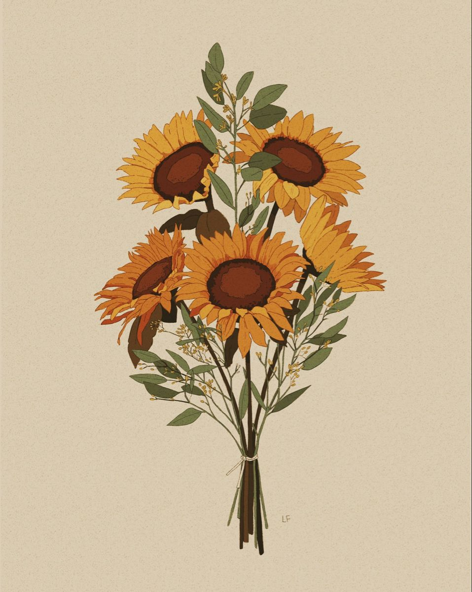

Aparte de que toda esta pagina es para ti , esta seccion lo es más, el motivo es dejar lo increible que eres y tambien terca, pero de igualmanera
lo querio dejar aqui por si en algun momento lo gustas volver a leer.
Fabulosa
Brenda, en todo este año siempre fuiste ante mis ojos una persona total mente fabulosa y hermosa, siempre con el aura de alguien dormida, digo con el aura de alguien fuerte que en cualquier momento
desmostraria su punto de vista.

Brenda, en todo este año siempre fuiste ante mis ojos una persona total mente fabulosa y hermosa, siempre con el aura de alguien dormida, digo con el aura de alguien fuerte que en cualquier momento desmostraria su punto de vista.
Graciosa
La verdad es que a pesar de tener un tipo de humor distinto no deja de gustarme lo que compartis, me da gracias y me saca muchas risas aunque no lo diga xD, esas ocurriensas tuyas siempre son agradables

La verdad es que a pesar de tener un tipo de humor distinto no deja de gustarme lo que compartis, me da gracias y me saca muchas risas aunque no lo diga xD, esas ocurriensas tuyas siempre son agradables
Capaz

Hay momentos en los cuales te noto algo cansada pero es normal la verdad, pero eso no quiere decir que no lo dejas de intentar, siempre te veo bostezando, digo dando todo de ti eso es muy admirable la verda, como te comente eres una fuente de motivacion, increible, terca y capaz, se que todo lo que te propongas lo llegaras a realizar, eres alguien fuerte de corazon y voluntar, eres fenomenal.
Musica
En la carta faltaron muchas cosas que incluso aqui puedo agregar, quizas con el tiempo, ya que puedo serguir editando la paguina, agragando mas pestañas para entretener más o actializar, esto es lo que me gusta de subirlo a github, obviamente esto es solo un comienzo y conforme vaya comprendiendo mas en respecto de la programación seguire mejorando el diseño y añadiendo cositas en la pagina, pero algo que quiero comentar es que tal como esta canción, asi siento que eres tu, una melodia delicada que demuestra fuerza con cada nota
mostrando precencia de su fuerza, determinacion, impone, pero tambien muestra su deseo real, elegante, calmada, obviamente hay mas cansiones en las cuales me gustaria interpretarte pero esta es la más acercada
Gracias
Te agradezco permitirme acompañarte en el transcurso de este año, hubieron buenos y malos momentos, pero aun asi ya esta terminando y quien lo diria, celebrar, verdadermaente disfrute este año y fue todo un honor
estar a tu lado, que pasara en el que viene, Quien sabe, pero espero que sigas progesando, cumplas tus sueños y metas de tenerlos y de no ser asi "¿Qué esperas para crearlos?". Te deseo lo mejor y volver a reunirnos para celebrar nuestros exitos.
Espero que tengas una Feliz Navidad, que convivas con todos tus seres queridos y abrir muchos regalos o autoregalos xD. Que el año que viene este lleno de salud, bendiciones y sabiduria para ti. Feliz Navidad y Año Nuevo.

Hay momentos en los cuales te noto algo cansada pero es normal la verdad, pero eso no quiere decir que no lo dejas de intentar, siempre te veo bostezando, digo dando todo de ti eso es muy admirable la verda, como te comente eres una fuente de motivacion, increible, terca y capaz, se que todo lo que te propongas lo llegaras a realizar, eres alguien fuerte de corazon y voluntar, eres fenomenal.
Musica
En la carta faltaron muchas cosas que incluso aqui puedo agregar, quizas con el tiempo, ya que puedo serguir editando la paguina, agragando mas pestañas para entretener más o actializar, esto es lo que me gusta de subirlo a github, obviamente esto es solo un comienzo y conforme vaya comprendiendo mas en respecto de la programación seguire mejorando el diseño y añadiendo cositas en la pagina, pero algo que quiero comentar es que tal como esta canción, asi siento que eres tu, una melodia delicada que demuestra fuerza con cada nota
mostrando precencia de su fuerza, determinacion, impone, pero tambien muestra su deseo real, elegante, calmada, obviamente hay mas cansiones en las cuales me gustaria interpretarte pero esta es la más acercada
Te agradezco permitirme acompañarte en el transcurso de este año, hubieron buenos y malos momentos, pero aun asi ya esta terminando y quien lo diria, celebrar, verdadermaente disfrute este año y fue todo un honor estar a tu lado, que pasara en el que viene, Quien sabe, pero espero que sigas progesando, cumplas tus sueños y metas de tenerlos y de no ser asi "¿Qué esperas para crearlos?". Te deseo lo mejor y volver a reunirnos para celebrar nuestros exitos. Espero que tengas una Feliz Navidad, que convivas con todos tus seres queridos y abrir muchos regalos o autoregalos xD. Que el año que viene este lleno de salud, bendiciones y sabiduria para ti. Feliz Navidad y Año Nuevo.